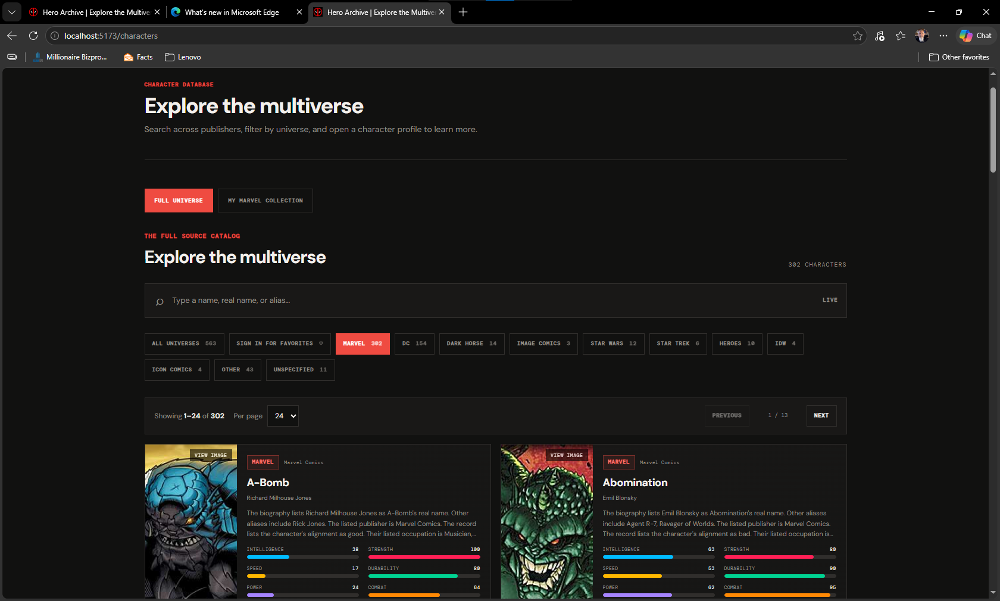
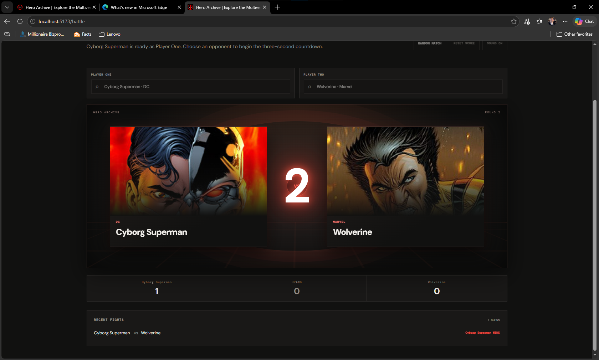

Full-stack web app
Hero Archive
Explore characters. Compare stats. Choose a favorite.
I built a searchable character catalog that connects a React and Vite frontend to a Node.js and Express API. Visitors can search by character name, real name, or alias; filter by publisher; and open detailed profiles with biographies, connections, and power stats.
- Added Supabase Auth accounts and per-user favorites protected by row-level security.
- Created a Battle mode that compares six character stats and presents the result in a cinematic matchup.
- Handled missing character images with local artwork fallbacks and an accessible image preview.